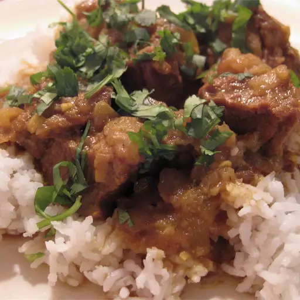

Beef Curry

Bangladeshi-style beef curry is a rich, flavorful dish known for its tender beef cooked in a blend of aromatic spices like turmeric, cumin, and garam masala. Often slow-cooked with onions, garlic, and ginger, the curry develops a deep, savory taste. Traditionally served with plain rice or parathas, it’s a comforting and hearty dish that captures the essence of Bangladeshi cuisine.
The dish have signature flavor comes from the slow infusion of spices, which meld perfectly with the richness of the beef. Ingredients like bay leaves, cinnamon, and dried red chilies add layers of warmth and depth, while the use of yogurt or tomatoes balances the heat with a subtle tanginess. Bangladeshi-style beef curry is often enjoyed during family gatherings or festive occasions, making it not just a meal but a tradition that brings people together to celebrate the vibrant tastes of the region.
Ingredients
- 3 tablespoons olive oil
- 1 onion, chopped
- 6 cloves garlic, minced
- 5 green chilies,finely sliced
- 1 tablespoon ginger paste
- 3 cardamom
- 2 cloves
- 1 cinnamon stick
- 1 tablespoon ground cumin
- 1 tablespoon ground coriander
- 1 teaspoon ground turmeric
- 1 teaspoon garlic powder
- 1 teaspoon cayenne pepper
- 1 cup water
- 2 pounds boneless beef chuck, cut into 1-1/2-inch pieces
Steps
- Heat olive oil in a skillet over medium heat. Add onion; cook and stir until the onion has softened and turned translucent, about 5 minutes. Reduce heat to medium-low and continue cooking and stirring until the onion is very tender and dark brown, 15 to 20 minutes more.
- Stir in the garlic, green chiles, ginger paste, cardamom seeds, cloves, and cinnamon sticks. Cook and stir until the garlic begins to brown, 3 to 5 more minutes.
- Mix cumin, coriander, turmeric, garlic powder, cayenne pepper, and water into the onion mixture. Simmer until most of the water has evaporated and the mixture has thickened.
- Stir in beef chuck pieces until coated with spice mixture; simmer over medium-low heat, stirring occasionally, until the beef is cooked through and tender, about 1 to 1 1/2 hours.
- Pour the beef curry in a bowl and garnish with cilantro(Optional)then serve it with plain rice or parathas